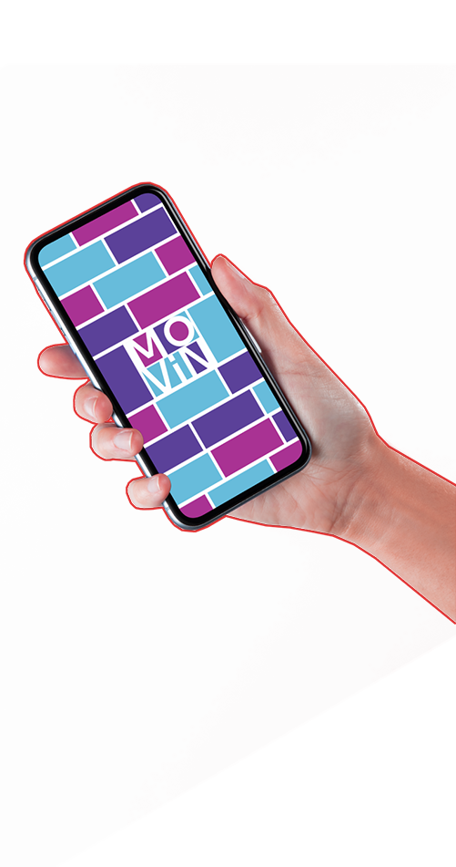
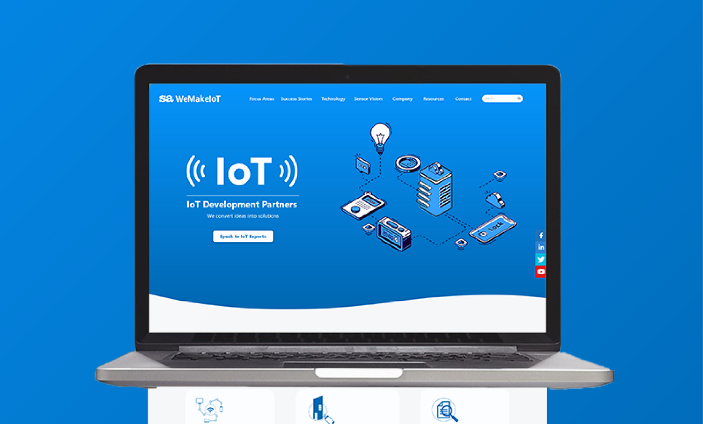
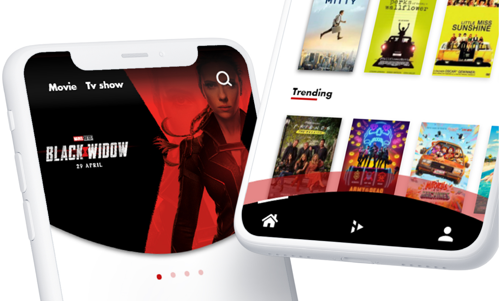
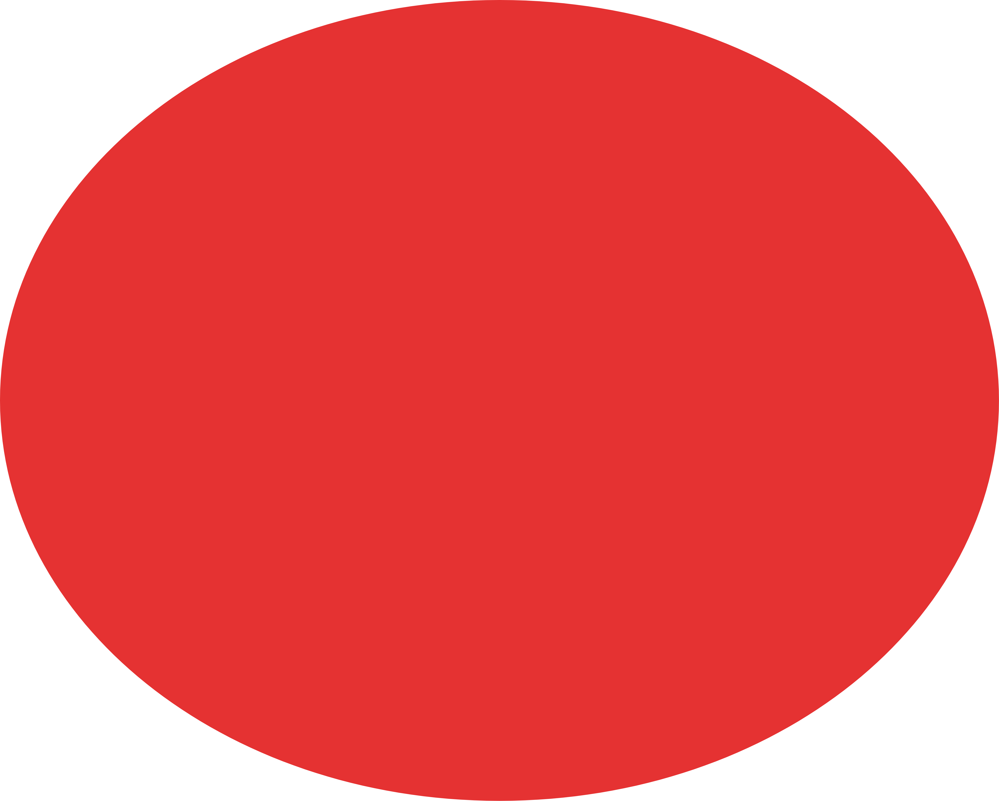

Projects

Explore the various and selected project that were done during the past 2 years of my professional career ranging from website redesign of a established IoT service company to exploring different ideas in my freetime. The following projects helped me a lot to learn and explore different techniques and tools in design, helping me grow in the process.
Scroll

Movin.
UX and UI
Movin is a new age app that acts as a platform to connect the people seeking for room and the people who are seeking for roommate.
view

We make IOT
UI Redesign
WeMakeIOT is a software associate web service division started in the year 1999. Me and my assosiate Sam were handed the task of redesigned the website to make it a little more modern and new age.
view

Play
User Interface
Play, an app to suggest movie/tv show to users, depending on the likes of theirs at that moment with family or friends and many more. And also to help the user to keep a track of movies that they have seen.
view

Contact
Graphic
Projects
About
Home